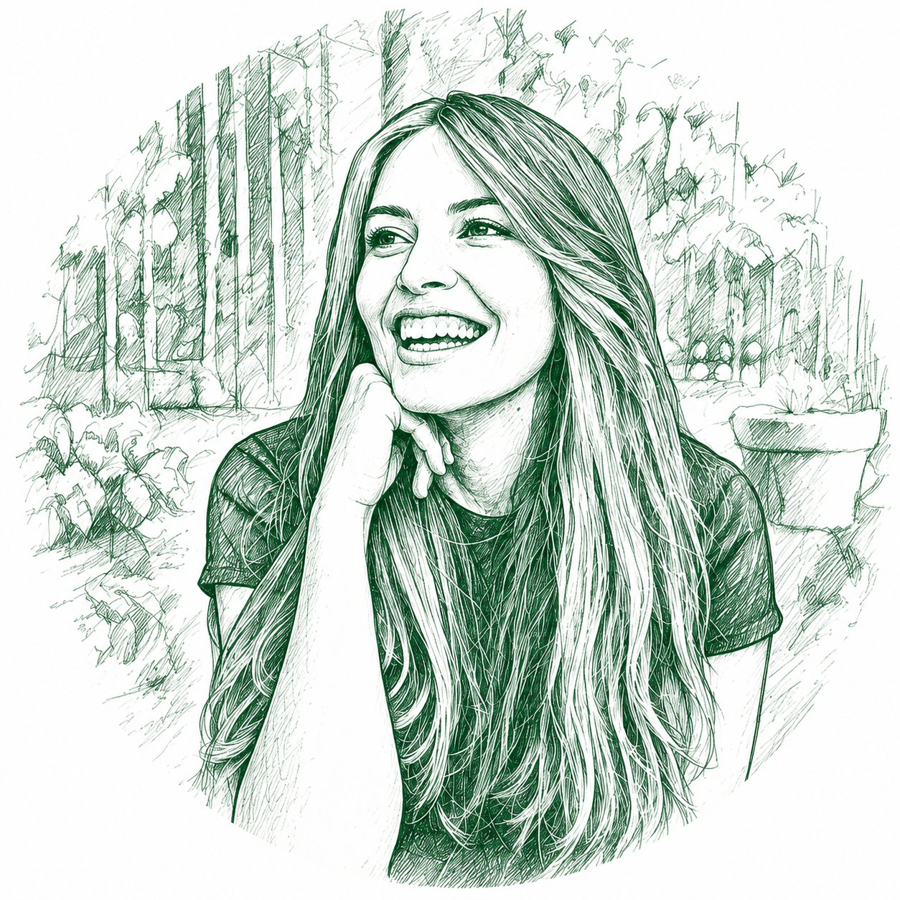

I help mission-driven organizations turn their work into funding — with a writer's care and a strategist's discipline.
Before I ever wrote a grant, I did the work itself. I have direct, hands-on service experience alongside amputees, survivors of exploitation, people with developmental disabilities, and people navigating mental health challenges. That experience changed how I write. I've served with the programs, so when I tell your story to a funder, I'm drawing on what this work actually looks like, and why it matters.
I've spent my career since then writing grants that expand access to inclusive education and healthcare in underserved communities — here at home and around the world. Behind every proposal is a program that changes someone's life, and behind every deadline is a team that deserves a partner who cares as much as they do.
I learn your mission until I can tell your story better than the funder expected to hear it.
I currently lead grant strategy and pre-award development as Strategic Support Manager for Grants at Project ECHO, based at the University of New Mexico, where I work alongside Ministries of Health, academic institutions, and interdisciplinary experts to secure federal, private, and philanthropic funding. Before that, I managed grants for Community Human Services in Monterey. Across these roles, I've engaged the program officers and review panels behind organizations like NIH, HRSA, SAMHSA, Pfizer, Chick-fil-A, and Bristol Myers Squibb.
If your organization is ready to pursue funding with confidence, let's start a conversation about your mission.